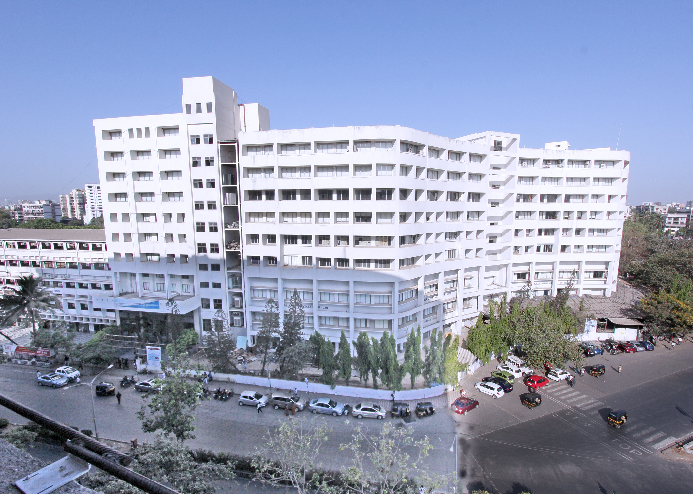

Colleges for BJMC in Mumbai
Mithibai College

Mithibai College of Arts, Chauhan Institute of Science and Amrutben Jivanlal College of Commerce and Economics, located in Mumbai is popularly known as Mithibai College of Arts. The college is affiliated to the University of Mumbai and accredited grade “A” by the NAAC.
At present, Mithibai College is offering UG and PG courses in the field of Arts, Science, and Commerce. It offers a doctoral-level course to offer Ph.D. degrees. Admissions to all the UG and PG courses are done purely on the basis of the merit list declared by the University of Mumbai. While candidates need to appear for an entrance test for Ph.D. admission.
From the placement perspective, Mithibai College holds a good record of placing the students every year. The highest salary package has touched the INR 19.5 LPA mark, while the average CTC stood at INR 7 LPA. Some of the key recruiters associated with the college are Google, Tech Mahindra, L&T Infotech, Capgemini, KPMG, Ernst & Young, etc.
RIZVI College

Rizvi College of Arts, Science, and Commerce (RCASC) was established was started in the year 1985. The college is affiliated to the University of Mumbai and is accredited with an ‘A’ grade by NAAC
At present, Rizvi College is offering various UG, PG, and Doctoral courses in the field of Arts, Science, and Commerce. In addition, the college also offers various certificate and add-on courses. Admissions to all the UG and PG courses are done on the basis of merit as per the Mumbai University guidelines
Rizvi College of Arts, Science, and Commerce also provides placement and internship opportunities to all the students by organizing on-campus and off-campus placement drives. The average package being offered at the college is INR 2.5-3 LPA. NDTV, Wipro, L&T Infotech, Colors, Capgemini, Infosys, and ICICI are some of the top recruiters associated with Rizvi College.
Xavier Institute Of Communications
Xavier Institute of Communication - [XIC] is a unit of St Xaviers’ College Autonomous and was established in 1969. XIC Mumbai offers a total of 6 full-time PG diploma courses across various specialisations. The institute also offers various part-time certification courses on its campus too. Admission to the university is on the basis of the XIC Online Entrance Test (OET) and a personal/ skype interview.
XIC is known as one of the most highly esteemed colleges of the Xavier Group, and is extremely well-known for its Mass Communication and Media degrees and has been ranked 3rd by The Week and 5th by India Today for its Mass Communication program. Graduates from XIC are placed across agencies in Mumbai like Genesis Burson- Marsteller, MSL, Adfactors,etc.
R.D National College

R.D. National College was established in the year 1949 by the Hyderabad Sind National Collegiate Board (HSNCB) in Mumbai, Maharashtra. The college is permanently affiliated to the University of Mumbai and is recognized by UGC.
At present, R.D. National College is offering various UG, PG, and Doctoral courses in the field of Arts, Science, and Commerce. Admissions to all the UG and PG courses are done on the basis of merit as per the University of Mumbai guidelines. While Ph.D. admissions are based on an entrance test followed by a personal interview conducted by the college.
R.D. National College also provides placement and internship opportunities to all the students. Every year more than 35% of the batch gets placed. The highest salary package offered at the college is INR 3.5 LPA, while the average CTC stood at INR 2.5 LPA. Wipro, Deloitte Infosys, ICICI Prudential, and HDFC are some of the top recruiters associated with the college.
Mumbai University

Established in 1857, the University of Mumbai is one of the oldest and premier universities in the nation. The Mumbai University has been recently featured in the QS World Rankings 2021 and has secured the rank in the band of 1001-1200. The Mumbai University is nationwide famous for offering various UG, PG and doctoral programmes under the faculties of Arts, Commerce, Science, Technology, Law, Management, and Fine Arts. Admission to the programmes of the Mumbai University is either granted on the basis of merit lists or entrance examinations.
Currently, the university has 56 Departments, 12 specialized Centres, 781+ Affiliated Colleges, 2 main Campuses, 2 sub Campuses, 2 Model Colleges, and the ‘School of Engineering and Applied Sciences’ at Kalyan as the University’s own Engineering College. Apart from these, the university also facilitates Distance and Open Learning to impart quality education among the learners who are removed in space from the teachers or the teaching institution on account of economic, social and consideration.
With the current enrollment of over 8,00,000 students, Mumbai University has always served the nation with its reputed and illustrious alumni members from Mahatma Gandhi and Babasaheb Ambedkar to Mukesh Ambani and Sunil Gavaskar. Also, the Mumbai University is committed to provide world class facilities, diverse opportunities, and perfect guidance to its students and focuses on the all-round development of a student.